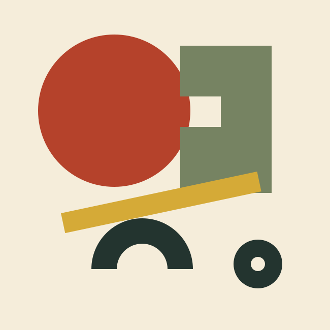
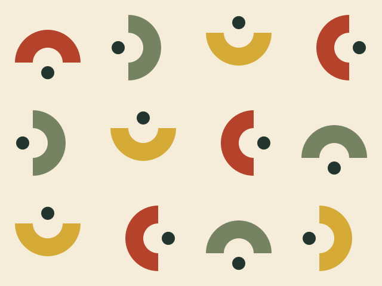

12
观察点位
为每个对象保留清楚编号。数字是虚构计划数量，不暗示已完成观察。

12 个观察点、3 轮记录、30 分钟。让简单的形，组织一份清楚的观察计划。
原创虚构内容 · 不是实际活动邀请
分立：先让圆、桥和杆各自清楚，再观察它们之间的留白。
这是构图演示，不是力学模拟；几何面积也不编码点位或时长。
为每个对象保留清楚编号。数字是虚构计划数量，不暗示已完成观察。
保持方法一致，记录条件差异。图形只组织页面，不替代证据。
长中文说明放在稳定栏内，不沿圆形或桥形挤成小字。真实活动另填时间和地点。

换一个主题，保留形与色的关系。纹样承担节奏，目录承担阅读。
原创虚构栏目，不代表真实活动安排。
有限形库、不对称平衡、深浅亮角色与稳定正文；去掉纸色仍能看出构图。
给所有页面贴旧椅子、原子星和泛黄噪点，正文难读，形之间没有关系。